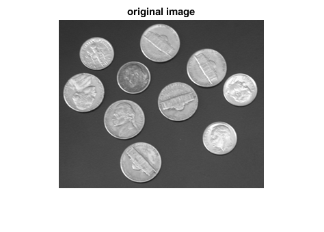
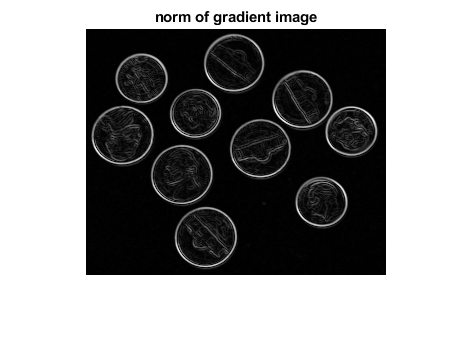
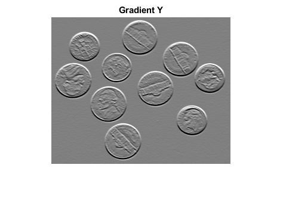
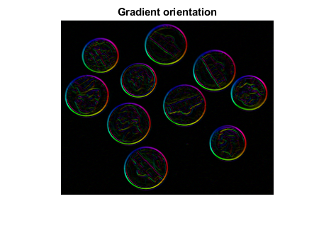

Contents
Read image, and compute norm of gradient
img = Image.read('coins.png');
figure;
show(img);
title('original image');
G = gradient(img);
GNorm = norm(G);
figure;
show(GNorm);
title('norm of gradient image');
 
Display gradient components
GX = channel(G, 1);
GY = channel(G, 2);
figure; show(GX, [-50 50]);
title('Gradient X');
figure; show(GY, [-50 50]);
title('Gradient Y');


Display orientation weighted by norm
ang = angle(G);
hue = (ang / (2*pi) + .5);
val = GNorm / max(GNorm(:));
sat = Image.ones(size(img), 'double');
hsv = cat(4, hue, sat, val);
rgb = hsv2rgb(hsv);
figure;
show(rgb);
title('Gradient orientation');
